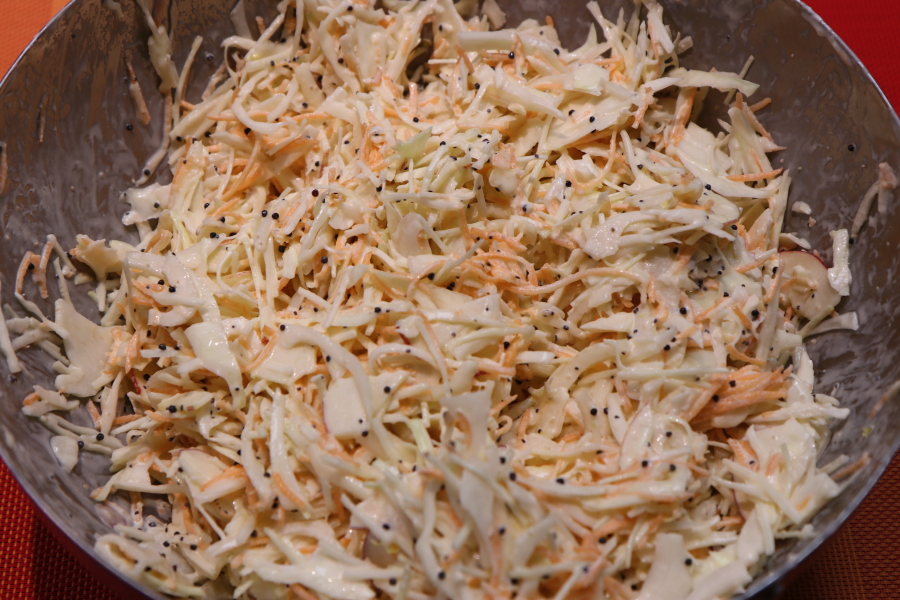

Home
Coleslaw

Description
King of side dishes, great with hot dogs
Ingredients - 2 people
- Coleslaw mix - 440g
- Mayonnaise - 115g
- Freshly squeezed lemon OR 1 1/2 Tbsp juice per 2 servings
- White Vinegar - 1 Tbsp
- Sweet pickle relish - 3 Tbsp
- Salt - 1/4 tsp
- Ground black pepper - 1/2 tsp
- Optional Granulated sugar - 2 Tbsp
Steps
- Mix all ingredients in a bowl
- Cover and let it sit in the fridge for about 1 hour